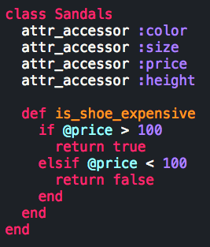
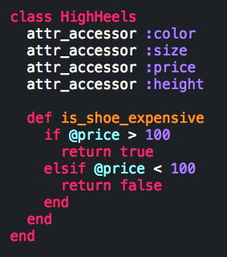
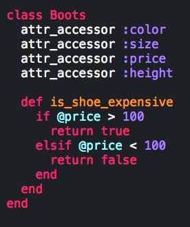
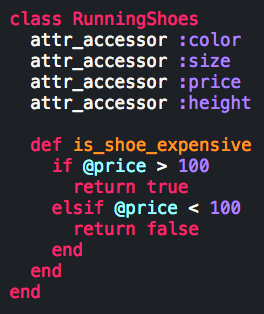
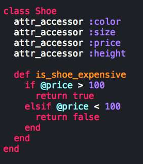
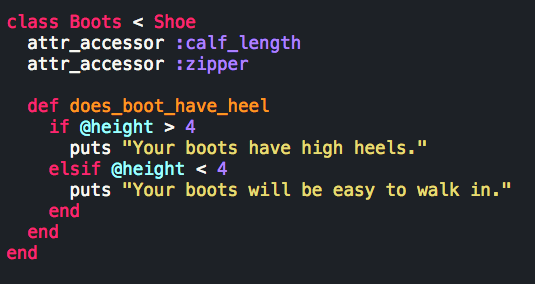
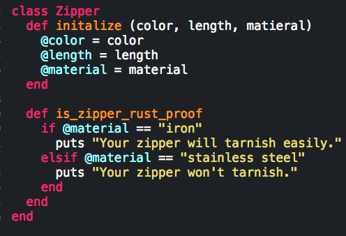
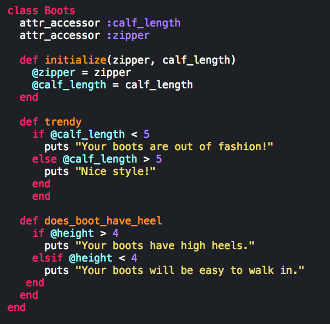
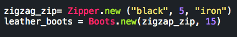

How did Ruby get so rich?
Inheritance
Inheritance is an important concept in object-oriented programming languages. It allows subclasses to inherit methods from a super class. This eliminates the need to copy and paste the exact same methods in every class. The inheritance relationship is described as a is-a relationship. For example, a high heel is a shoe.
In the example below, you see four different classes: Sandals, HighHeels, Boots, and RunningShoes.
   All of these classes are shoes which have common methods and variables that can be moved to the Shoe class.
Shoe becomes the superclass and the Boots, HighHeels, RunningShoes, and Sandals are the subclasses. These subclasses will inherit the attribute accessor methods that create the instance variables in the classes. They will not inherit the actual instance variables.
In the example below, the subclass Boots inherits from superclass Shoe using the < symbol.
The subclasses can still define their own methods (which are not inherited). For example, if we want to determine whether or not a boot has a high heel, the RunningShoes and Sandals classes should not be affected. Instead, we can specifically define a method in the Boots class.
Subclasses can create their own methods that override the methods they inherit from their superclass. If you want to change the function of a method inherited from a superclass, you can change the method within the subclass. If no superclass is defined for a class, then the class Object automatically becomes the superclass.
Composition involves the concept that the parts make up the whole. An objects has parts, and this is described as a has-a relationship. For example, if we wanted to break up the Shoe class into parts, we might look at the instance variables. Shoe has a sole for example.
The class Boot has its own parts. For example, a boot has a zipper. As a result, a new class called Zipper can be created.
The Zipper class will be initialized with a color, length, and material. The Boots class is now updated. In its initialize method, it takes a zipper and a calf length.
A new instance of the class Zipper is created. The new obect zigzag_zip is passed as the argument for the leather_boots object, which is a new instance of the Boots class.
